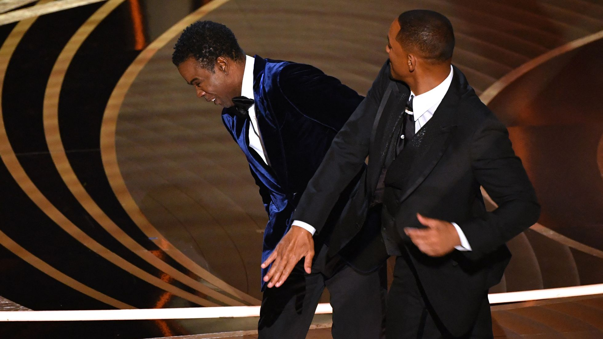

Noticia
Con una medio sonrisa y un gesto de desconcierto, el comediante Chris Rock exclamó:
"Will Smith me acaba de dar una bofetada".
Tras unos segundos de conmoción, añadió:
"Esa fue la mejor noche en la historia de la televisión".
Luego entregó el premio al mejor documental.
Intentaba cerrar así el incidente que terminó por acaparar toda la atención de la
94ª edición de los Oscar, los premios que entrega la Academia de las Artes y las
Ciencias Cinematográficas de Estados Unidos.
Fotografias

Refiriéndose a la cabeza rapada de Pinkett Smith, Rock dijo: "Jada, no puedo esperar a GI Jane 2",
en referencia a GI Jane, la película de 1997 para la que la actriz Demi Moore se afeitó la cabeza
para interpretar a Jordan O'Neil, la primera mujer en recibir entrenamiento de los Navy Seal.
Al insinuar que Jada podría protagonizar una posible secuela, Chris Rock se burlaba de la cabeza
rapada de Pinkett Smith.
Lo que quizás no sabía Rock es que la esposa de Will Smith tiene alopecia, un trastorno autoinmune
que causa la caída del cabello y del que ha hablado públicamente.
Smith, a quien primero se le ve riendo, subió al escenario y le dio una bofetada a Rock antes de
regresar a su asiento y gritar: "Mantén el nombre de mi esposa fuera de tu maldita boca".
El comediante le dijo: "Hombre, ¡era solo un chiste sobre GI Jane!", a lo que el actor insistió en
exigirle que no hablara de su esposa.